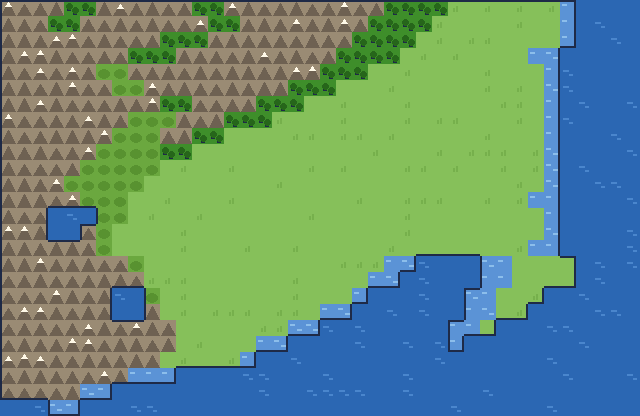
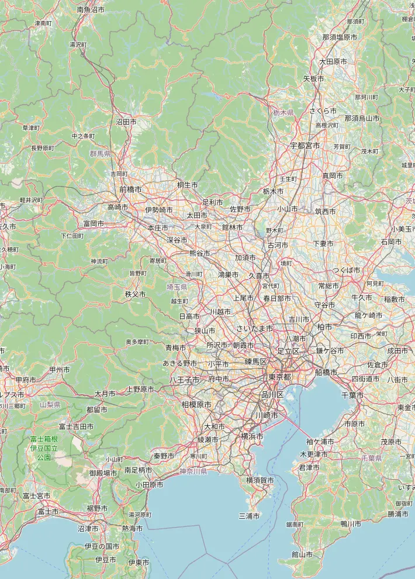

Prima versione: solo Tokyo. Volo e alloggio sono prezzi veri, letti da Google Flights e Google Hotels e rinfrescati regolarmente; anche il cambio euro/yen è quello della BCE del giorno. Anche i biglietti dei treni e i biglietti d'ingresso sono verificati alla fonte, uno per uno. Restano stime i voli dentro il Giappone, i due traghetti e quanto si spende per mangiare: in fondo al risultato è scritto voce per voce cosa è reale e cosa no. Le altre città arrivano dopo. Usalo per farti un'idea e per capire quali leve spostano il costo, non per prenotare. Nessun dato che inserisci esce da questa pagina: il calcolo avviene nel tuo browser.
1.Cosa ti interessa davvero
Scegline almeno 2; il punto giusto sta fra 3 e 6. Sono queste a decidere l'itinerario, non le date.
 Anime e mangapellegrinaggi nei luoghi delle serie, Akiba, museiIl seichi junrei: andare nel punto esatto dove è ambientata una scena. Al passo dopo scegli le serie, e quelle spostano davvero l'itinerario — non sono un'etichetta.
Anime e mangapellegrinaggi nei luoghi delle serie, Akiba, museiIl seichi junrei: andare nel punto esatto dove è ambientata una scena. Al passo dopo scegli le serie, e quelle spostano davvero l'itinerario — non sono un'etichetta. Action figure e collezionismoscatole, vetrine, gashapon, garage kit4 domande in più al passo dopoDa Radio Kaikan ai dieci piani di Nakano Broadway. Cambia molto se cerchi il pezzo nuovo in scatola, l'usato raro, o le macchinette delle capsule.
Action figure e collezionismoscatole, vetrine, gashapon, garage kit4 domande in più al passo dopoDa Radio Kaikan ai dieci piani di Nakano Broadway. Cambia molto se cerchi il pezzo nuovo in scatola, l'usato raro, o le macchinette delle capsule. Templi e santuariil Giappone che ti aspetti dalle foto3 domande in più al passo dopoCe ne sono migliaia e non si assomigliano. I grandi si vedono in mezz'ora ma con la folla; i piccoli fuori mano si trovano vuoti anche a mezzogiorno.
Templi e santuariil Giappone che ti aspetti dalle foto3 domande in più al passo dopoCe ne sono migliaia e non si assomigliano. I grandi si vedono in mezz'ora ma con la folla; i piccoli fuori mano si trovano vuoti anche a mezzogiorno. Mangiaremercati, izakaya, street food, una cena seria6 domande in più al passo dopoÈ la voce su cui si spende senza accorgersene. Dire cosa cerchi cambia sia l'itinerario sia il preventivo: una cena kaiseki costa quanto tre giorni di konbini.
Mangiaremercati, izakaya, street food, una cena seria6 domande in più al passo dopoÈ la voce su cui si spende senza accorgersene. Dire cosa cerchi cambia sia l'itinerario sia il preventivo: una cena kaiseki costa quanto tre giorni di konbini. Storia e castellisamurai, guerra, periodo Edo2 domande in più al passo dopoTre storie diverse che quasi non si toccano: il Giappone dei samurai, quello che si è aperto all'occidente, e quello del Novecento.
Storia e castellisamurai, guerra, periodo Edo2 domande in più al passo dopoTre storie diverse che quasi non si toccano: il Giappone dei samurai, quello che si è aperto all'occidente, e quello del Novecento. Natura e paesaggimontagne, laghi, giardini, mare3 domande in più al passo dopoIn Giappone la natura è quasi sempre composta: anche il bosco è progettato. Scegliere fra giardino e montagna cambia completamente le giornate.
Natura e paesaggimontagne, laghi, giardini, mare3 domande in più al passo dopoIn Giappone la natura è quasi sempre composta: anche il bosco è progettato. Scegliere fra giardino e montagna cambia completamente le giornate. Onsen e termebagni caldi, ryokan, relax2 domande in più al passo dopoNudi, divisi per sesso, e in molti posti con i tatuaggi non ti fanno entrare. Se hai tatuaggi dillo qui sotto: cambia dove ti mando.
Onsen e termebagni caldi, ryokan, relax2 domande in più al passo dopoNudi, divisi per sesso, e in molti posti con i tatuaggi non ti fanno entrare. Se hai tatuaggi dillo qui sotto: cambia dove ti mando. Camminate e trekkingsentieri, salite, giornate a piedi3 domande in più al passo dopoDa un'ora di passeggiata piana alla notte in rifugio sul Fuji. Dirlo evita di ritrovarti una salita di sei ore in mezzo alle vacanze.
Camminate e trekkingsentieri, salite, giornate a piedi3 domande in più al passo dopoDa un'ora di passeggiata piana alla notte in rifugio sul Fuji. Dirlo evita di ritrovarti una salita di sei ore in mezzo alle vacanze. Arte e designmusei contemporanei, architettura, isole d'arte3 domande in più al passo dopoIl Giappone contemporaneo è uno dei posti più forti al mondo per installazioni e architettura, e quasi nessuno ci va per quello.
Arte e designmusei contemporanei, architettura, isole d'arte3 domande in più al passo dopoIl Giappone contemporaneo è uno dei posti più forti al mondo per installazioni e architettura, e quasi nessuno ci va per quello. Videogiochi e retrogamingsale giochi, usato, Nintendo3 domande in più al passo dopoLe sale giochi sono ancora vive e rumorose, e l'usato costa una frazione di quanto costa in Europa.
Videogiochi e retrogamingsale giochi, usato, Nintendo3 domande in più al passo dopoLe sale giochi sono ancora vive e rumorose, e l'usato costa una frazione di quanto costa in Europa. Shopping e vintageusato, cartoleria, quartieri di moda4 domande in più al passo dopoIl vintage giapponese è tenuto meglio del nuovo altrove, e la cartoleria è una categoria di souvenir che nessuno si aspetta.
Shopping e vintageusato, cartoleria, quartieri di moda4 domande in più al passo dopoIl vintage giapponese è tenuto meglio del nuovo altrove, e la cartoleria è una categoria di souvenir che nessuno si aspetta. Notte e vita localevicoli, bar minuscoli, karaoke4 domande in più al passo dopoDi notte il Giappone cambia mestiere. I vicoli con i banconi da sei posti sono la cosa più difficile da trovare da soli.
Notte e vita localevicoli, bar minuscoli, karaoke4 domande in più al passo dopoDi notte il Giappone cambia mestiere. I vicoli con i banconi da sei posti sono la cosa più difficile da trovare da soli. Tradizione vivageisha, cerimonia del tè, artigiani, kimono4 domande in più al passo dopoNon il museo della tradizione: la tradizione ancora praticata da qualcuno che ci lavora.
Tradizione vivageisha, cerimonia del tè, artigiani, kimono4 domande in più al passo dopoNon il museo della tradizione: la tradizione ancora praticata da qualcuno che ci lavora. Neve e invernosci, festival della neve, onsen nella neveLa neve giapponese è famosa perché è tanta e leggera. Ma inverno non vuol dire per forza sci.
Neve e invernosci, festival della neve, onsen nella neveLa neve giapponese è famosa perché è tanta e leggera. Ma inverno non vuol dire per forza sci. Mare e isoleOkinawa, mare interno, traghetti1 domande in più al passo dopoDue mari diversi: quello tropicale di Okinawa e il mare interno con le isole d'arte.
Mare e isoleOkinawa, mare interno, traghetti1 domande in più al passo dopoDue mari diversi: quello tropicale di Okinawa e il mare interno con le isole d'arte. Museidall'archeologia alla tecnica5 domande in più al passo dopoI musei giapponesi di tecnica sono i migliori del mondo e quasi nessun turista ci mette piede.
Museidall'archeologia alla tecnica5 domande in più al passo dopoI musei giapponesi di tecnica sono i migliori del mondo e quasi nessun turista ci mette piede. Cose straneposti che nessuno mette in itinerario2 domande in più al passo dopoLa categoria che salva un viaggio dal sembrare la guida di tutti gli altri.
Cose straneposti che nessuno mette in itinerario2 domande in più al passo dopoLa categoria che salva un viaggio dal sembrare la guida di tutti gli altri. Panorami e fotopunti alti, skyline, il Fuji3 domande in più al passo dopoSe fotografi, l'ora conta più del posto. I rami qui sotto decidono a che ora ti mando dove.
Panorami e fotopunti alti, skyline, il Fuji3 domande in più al passo dopoSe fotografi, l'ora conta più del posto. I rami qui sotto decidono a che ora ti mando dove. Adatto ai bambiniparchi, acquari, cose che non annoiano3 domande in più al passo dopoCon i bambini il vincolo non è il costo, è la durata: dopo due ore in un tempio è finita.
Adatto ai bambiniparchi, acquari, cose che non annoiano3 domande in più al passo dopoCon i bambini il vincolo non è il costo, è la durata: dopo due ore in un tempio è finita.Serve almeno un paio di interessi: sono loro a costruire l'itinerario.

2.Precisiamo
Per ogni cosa che hai scelto, dimmi che taglio darle. Ogni risposta riordina i luoghi: chi ha il dettaglio che hai chiesto passa davanti a chi ha solo l'argomento giusto. Puoi anche saltarle tutte.
Anime e manga
Quali serie vuoi vedere dal vivo. Il pellegrinaggio (聖地巡礼, seichi junrei) cambia la rotta: alcuni luoghi sono lontani dai giri classici.
Natura e paesaggi
In Giappone la natura è quasi sempre composta: anche il bosco è progettato. Scegliere fra giardino e montagna cambia completamente le giornate.
Tradizione viva
Non il museo della tradizione: la tradizione ancora praticata da qualcuno che ci lavora.

3.Chi parte, e da dove
In questa simulazione un bambino pesa il 65% di un adulto: volo quasi pieno, cibo e ingressi ridotti, letto condiviso. È l'assunzione del nostro modello, non una tariffa: quella vera dipende da età e compagnia.

4.Quando
La stagione è la leva più potente sul prezzo: fra la settimana più cara e la più economica ballano centinaia di euro a persona, a parità di tutto il resto.

5.Quanto a lungo, e con che ritmo

6.Ci sei già stato?
Spunta quello che hai già visto: il motore lo toglie dall'itinerario e ti manda altrove.

Spostamenti dentro il Giappone

7.Che tipo di viaggiatore sei
Vedrai comunque tutti e tre i livelli affiancati: questo decide quale evidenziare. La zona dove dormire la scegliamo noi, prendendo la mediana delle zone di Tokyo per la fascia che hai scelto: nel risultato puoi spostarti sulla più economica o sulla più cara con un clic.
Il tuo viaggio, in numeri
Clicca una colonna per cambiare il livello di riferimento. Il numero è un intervallo travestito da cifra: consideralo ±15%.
Sei il preventivo numero 1 fatto con questo strumento.
Tokyo per 13 giorni pieni, più 3 gite in giornata: Hakone, Kawaguchiko (Fuji), Chichibu.
Clima perfetto. Il foliage inizia dal nord.
Il Japan Rail Pass qui non c'entra: restando a Tokyo i treni sono solo quelli delle gite, 70 euro a persona in tutto, più il trasporto urbano. Il pass costa da 285 euro in su: non lo ammortizzi.
Il volo è un prezzo vero: 1150 euro a persona, Turkish Airlines, 15 ore all'andata con 1 scalo, letto su Google Flights per la partenza del 13/10/2026.
Il volo più economico costa appena 17 euro meno e dura 26 ore in più, con uno scalo di 10 ore: sono 1 euro l'ora di attesa.
Se le 15 ore in economy ti spaventano, il gradino di mezzo esiste: la premium economy costa 2375 euro, cioè 1225 in più a persona, ed è un volo diretto. La business, per confronto, ne chiede 3700.
Anche l'alloggio è vero, e la zona l'abbiamo scelta noi per te: 78 euro a notte è la mediana delle 10 zone di Tokyo in fascia business, su 260 strutture lette da Google Hotels. Fra la zona più economica e la più cara ballano parecchi soldi: Minami-Senju sta a 55 euro a notte, Ginza a 110. Su 13 notti sono 715 euro di differenza sul soggiorno: le leve qui sotto te la fanno vedere.
Il livello "Normale" viene circa 3060 euro a persona, cioè 220 euro al giorno tutto compreso.
Stesso viaggio, stesse risposte, cambia solo quando parti. Le due colonne sono due preventivi rifatti da capo: evidenziato in verde quello che costa meno.
Da cosa è fatto questo numero
| Voce | a persona | gruppo | come è calcolata |
|---|---|---|---|
| Volo intercontinentale reale | 1150 € | 2300 € | prezzo reale Google Flights, Roma Fiumicino → Tokyo, partenza 13/10/2026, Turkish Airlines, 15h all'andata, 1 scalo, classe economy — rilevato il 23/08/2026. Google non dichiara il bagaglio in stiva: sulle tariffe più basse di solito NON è incluso, e non è in questo totale |
| Trasporti in Giappone | 164 € | 329 € | biglietti del giro + trasporto urbano 850 ¥/giorno + transfer aeroporto |
| Alloggio reale | 575 € | 1149 € | prezzo reale Google Hotels: 78 € a notte × 13 notti × 1 camera, diviso fra chi ci dorme, più il rincaro di venerdì e sabato (misurato: ×1,32 e ×1,613, una notte su sette ciascuno, +13% sul soggiorno) — mediana delle 10 zone di Tokyo in questa fascia, su 260 strutture (da Minami-Senju a 55 € fino a Ginza a 110 €), rilevato il 23/08/2026 |
| Mangiare | 438 € | 877 € | colazione al bar, pranzo in trattoria, cena in ristorante normale, un dolce |
| Ingressi ed esperienze | 262 € | 524 € | 16 ingressi ed esperienze a pagamento |
| Extra | 327 € | 654 € | assicurazione, eSIM, souvenir |
| Imprevisti | 146 € | 292 € | 5% di margine: c'è sempre qualcosa |
| Totale | 3062 € | 6123 € |
Sui luoghi delle serie. Nel tuo giro ce ne sono 11. Sono tutti posti pubblici — stazioni, scalinate, strade, musei: in questo catalogo non entrano case private né indirizzi di persone. Quando ci arrivi, ricordati che per chi ci abita è solo il quartiere sotto casa: voce bassa, niente riprese dentro i cortili, e la fila la fanno anche i pellegrini.
Due cose che questo totale non contiene. Il bagaglio in stiva: la fonte dei voli non dice se la tariffa lo include, e sulle tariffe più basse di solito non c'è — se ti serve, aggiungi quanto chiede la tua compagnia (di norma fra i 60 e i 100 € a tratta). E la disponibilità: il prezzo è quello che si vedeva alla data della rilevazione, non una camera o un posto prenotato.
Notte per notte
| Città | notti | camere | a notte | totale |
|---|---|---|---|---|
| Tokyo, mediana di 10 zone | 13 | 1 | 78 € | 1149 € |
Quanto costa la notte, zona per zona
Fascia business, Ottobre. Il preventivo usa la mediana; cliccando una leva più sotto ti sposti su una zona precisa.
| Zona | €/notte | su 13 notti | strutture | com'è |
|---|---|---|---|---|
| Minami-Senju | 55 € | 715 € | 25 | San'ya: il quartiere dove si dorme con poco |
| Shinjuku | 60 € | 780 € | 32 | la stazione più grande del mondo, tutto a portata |
| Ikebukuro | 60 € | 780 € | 32 | grande, popolare, meno turistico |
| Akihabara | 70 € | 910 € | 38 | elettronica e anime, centralissimo |
| Asakusa | 75 € | 975 € | 24 | il tempio, le stradine, la Tokyo di prima |
| Ueno | 80 € | 1040 € | 24 | musei e parco, ben collegato all'aeroporto |
| Roppongi | 85 € | 1105 € | 26 | vita notturna e hotel internazionali |
| Shibuya | 90 € | 1170 € | 9 | l'incrocio, giovani, tutto aperto tardi |
| Tokyo Station Marunouchi | 105 € | 1365 € | 25 | sopra la stazione centrale, comodo per lo Shinkansen |
| Ginza | 110 € | 1430 € | 25 | vetrine, sushi costoso, alberghi da business trip |
Ogni biglietto del giro
| Tratta | Mezzo | min | costo | prezzo | JR Pass |
|---|---|---|---|---|---|
| Tokyo → Hakone | Odakyu Romancecar (andata e ritorno in giornata) | 190 | 26 € | verificata | no |
| Tokyo → Kawaguchiko (Fuji) | bus da Shinjuku (andata e ritorno in giornata) | 260 | 24 € | verificata | no |
| Tokyo → Chichibu | Seibu Red Arrow (andata e ritorno in giornata) | 160 | 18 € | verificata | no |
Cosa è incluso negli ingressi, e da dove viene ogni prezzo
| Voce | costo | prezzo | fonte |
|---|---|---|---|
| Zoo di Ueno | 3 € | verificato | tokyo-zoo.net/zoo/ueno/ · 23/08/2026 |
| Monte Takao: la montagna dentro Tokyo | 5 € | verificato | takaotozan.co.jp · 23/08/2026 |
| Museo Ghibli a Mitaka | 5 € | verificato | ghibli-museum.jp/ticket/ · 23/08/2026 |
| Museo Fujiko F. Fujio (Doraemon), Kawasaki | 5 € | verificato | fujiko-museum.com/ticket/ · 23/08/2026 |
| I campeggi di Yuru Camp | 5 € | spesa tipica | non esiste un listino: è quanto si spende |
| Giro del lago Kawaguchi in bici | 8 € | spesa tipica | non esiste un listino: è quanto si spende |
| Kissaten a Jinbocho: caffè, fumo e librerie | 8 € | spesa tipica | non esiste un listino: è quanto si spende |
| Super Potato, tempio del retrogaming | 8 € | spesa tipica | non esiste un listino: è quanto si spende |
| Owakudani e la funivia sulle solfatare | 11 € | verificato | hakoneropeway.co.jp · 23/08/2026 |
| Hakone Open Air Museum | 11 € | verificato | hakone-oam.or.jp · 23/08/2026 |
| Kabuki-za: un atto solo, dal loggione | 11 € | verificato | kabuki-bito.jp · 23/08/2026 |
| Gashapon no Depato a Ikebukuro (migliaia di macchinette) | 11 € | spesa tipica | non esiste un listino: è quanto si spende |
| Cerimonia del tè con un maestro | 24 € | spesa tipica | non esiste un listino: è quanto si spende |
| Kimono per la giornata ad Asakusa | 24 € | spesa tipica | non esiste un listino: è quanto si spende |
| Sanrio Puroland | 25 € | verificato | puroland.jp/passport/ · 23/08/2026 |
| Una cena kaiseki | 97 € | spesa tipica | non esiste un listino: è quanto si spende |
Japan Rail Pass: conviene o no
Biglietti singoli per tutto il giro: 128 € a persona — con Japan Rail Pass 7 giorni: 402 €.
Non conviene il pass: coi biglietti singoli risparmi 274 € a persona.
Il conto tiene conto che il pass non deve coprire tutto il viaggio, ma solo la finestra in cui cadono i trasferimenti cari. Il prezzo è quello ufficiale del JR Group (japanrailpass.net/en/purchase/price/, letto il 25/08/2026): dal 1° ottobre 2026 il pass da 7 giorni costa 53.000 yen, prima ne costava 50.000. Qui si usa il prezzo nuovo, perché è quello che pagherai. Anche le tariffe dei treni sono verificate una per una.
L'itinerario che ne esce
Tokyo → Tokyo (rientro)


- Scalinata di Suga Jinja (Your Name) (1h, gratis)
- Shibuya di Jujutsu Kaisen (1.5h, gratis)
- Azabu-Juban di Sailor Moon (1.5h, gratis)
- Museo Ghibli a Mitaka (3h, 5 €) Biglietti a estrazione, si comprano il 10 del mese precedente.
- Museo Fujiko F. Fujio (Doraemon), Kawasaki (3h, 5 €)
- Hakone = Tokyo-3: i luoghi di Evangelion (3h, gratis)
- Owakudani e la funivia sulle solfatare (3h, 11 €)
- Hakone Open Air Museum (2.5h, 11 €)
- Radio Kaikan ad Akihabara: dieci piani di figure (2.5h, gratis) Kotobukiya, Volks e i negozi di garage kit tutti nello stesso palazzo.
- Otome Road a Ikebukuro (2.5h, gratis) L'Akihabara del pubblico femminile: doujinshi, goods, cafè.
- Senso-ji e Nakamise ad Asakusa (2.5h, gratis)
- Nakano Broadway (usato da collezionisti) (3h, gratis)
- I campeggi di Yuru Camp (4h, 5 €)
- Giro del lago Kawaguchi in bici (4h, 8 €)
- Meiji Jingu e Harajuku (3h, gratis)
- Yanaka: la Tokyo di prima della guerra (3h, gratis)
- Kissaten a Jinbocho: caffè, fumo e librerie (2h, 8 €)
- Una cena kaiseki (3h, 97 €) Si prenota settimane prima e spesso serve che lo faccia l'hotel.
- I luoghi di Anohana a Chichibu (4h, gratis)
- Monte Takao: la montagna dentro Tokyo (6h, 5 €)
- Cerimonia del tè con un maestro (2h, 24 €)
- Kimono per la giornata ad Asakusa (1h, 24 €)
- Kabuki-za: un atto solo, dal loggione (2h, 11 €) Il biglietto per un atto si compra il giorno stesso e costa un decimo.
- Sanrio Puroland (6h, 25 €)
- Zoo di Ueno (3h, 3 €)
- Gashapon no Depato a Ikebukuro (migliaia di macchinette) (1.5h, 11 €) Porta monete da 100 yen: le macchinette non danno resto.
- Super Potato, tempio del retrogaming (1.5h, 8 €)
Le leve: cosa cambia il prezzo, e di quanto
Ogni riga è il preventivo rifatto da capo con quella modifica. Cliccala per applicarla davvero.
Ostello, volo al minimo, si mangia al konbini.−1520 €
San'ya: il quartiere dove si dorme con poco−360 €
vetrine, sushi costoso, alberghi da business trip+500 €
Sedile più largo e bagaglio incluso, senza arrivare alla business. Cambia solo il volo, non il resto del viaggio.+2450 €
Business a bordo e hotel di categoria: è un altro viaggio, e si vede.+10.760 €
Da dove vengono questi prezzi
12 voci su 26 (46%) sono stime, non tariffe controllate su fonte ufficiale, più 8 voci che sono spese tipiche (un ramen, una serata fuori): quelle un listino ufficiale non ce l'hanno, quindi restano stime per sempre e le teniamo contate a parte. Ma le voci non pesano uguale: contando gli euro, la quota che arriva da stime è il 38% del totale (1889 € su 3062 vengono da un prezzo verificato). È questo il numero che conta: verificare i souvenir non vale quanto verificare il volo.
La formula, così puoi rifare il conto: la percentuale sulle voci conta una voce per ogni ingresso, ogni tratta, ogni città toccata, più volo, alloggio e cambio, e considera verificata solo quella che porta una marca esplicita. La percentuale sull'importo è 1 meno la somma delle voci verificate diviso il totale a persona.
Prezzi veri, letti da un sistema di prenotazione: il volo (Google Flights, tariffa esatta 1160 €, arrotondata ai 25); l'alloggio (Google Hotels, mediana delle 10 zone di Tokyo su 260 strutture, arrotondata ai 5); il cambio euro/yen (1 € = 185.92 ¥, BCE del 28/08/2026).
Ancora stime scritte a mano: la metropolitana urbana, i voli dentro il Giappone e i due traghetti, quanto si spende per mangiare, assicurazione e souvenir. Nessuna disponibilità viene interrogata: se l'albergo è pieno, questo non lo sa.
Quello che non è né vero né stimato ma calcolato è il ragionamento: come si riempiono le giornate, quali gite reggono il viaggio, la somma delle voci, e di quanto si sposta il totale quando cambi una risposta. Quello vale a prescindere dai prezzi.
Cambio usato: 1 € = 185.92 ¥, quotazione BCE del 28/08/2026. Listino prezzi rigenerato il 31/08/2026.
Questo contatore dice quello che il servizio non sa. Scende solo verificando le voci una per una, non nascondendolo.